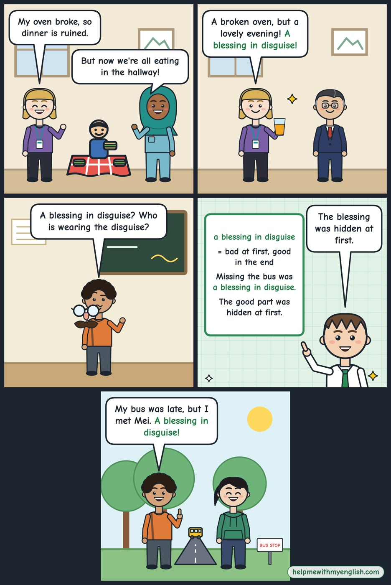

a blessing in disguise
Something that seems bad at first but turns out to be good.
Missing the bus was a blessing in disguise. I met an old friend.
Tip: Say 'it was a blessing in disguise' or 'turned out to be a blessing in disguise' about something you only see as good afterwards; don't use it for a good thing that looked good from the start.
Hear it in conversation
Workbook
1. What does it mean?
In this conversation, what does 'a blessing in disguise' mean?
2. Fill the gap
I was upset when the office moved, but the shorter commute has been a .
3. Choose the best reply
Amira: I failed my driving test, but my instructor spotted a problem with my mirror checks that could have caused an accident.
4. Your turn: speak
Can you tell me about a time when something that seemed bad at first turned out well for you?
Show an example answer
A few years ago I lost my job when my company downsized, and I was really worried. But it pushed me to look for something new, and I found a role that suits me much better. Looking back, it was a blessing in disguise.
Answer key: a blessing in disguise
- 1. A. Something that looked unlucky at first but led to a good result
- 2. blessing in disguise
- 3. B. Well, maybe failing was a blessing in disguise, then.
- 4. Example: A few years ago I lost my job when my company downsized, and I was really worried. But it pushed me to look for something new, and I found a role that suits me much better. Looking back, it was a blessing in disguise.
See it in a comic
